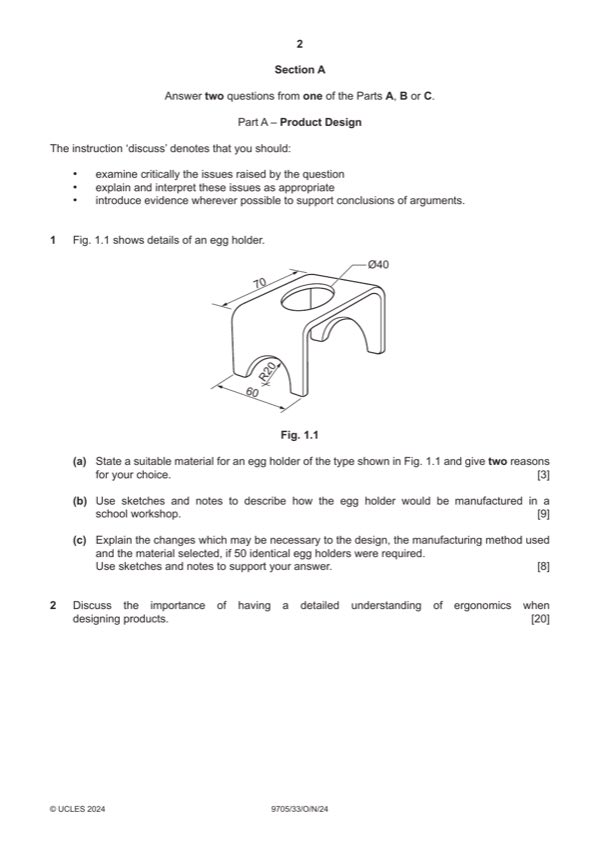

Question 1

Original paper page 2
Part 1(a) — solution
- aluminium alloy, copper, stainless steel
- hardwood laminate, e.g. beech, birch
- abs, acrylic, polypropylene 1
- takes a good finish
- looks attractive
- cleans easily 12
Mark points
- aluminium alloy, copper, stainless steel
- hardwood laminate, e.g. beech, birch
- abs, acrylic, polypropylene 1
- takes a good finish
- looks attractive
- cleans easily 12
Part 1(b) — solution
- fully detailed all/most stages 4–7
- some detail, 0–3 secure workpiece, waste board underneath work
Mark points
- fully detailed all/most stages 4–7
- some detail, 0–3 secure workpiece, waste board underneath work
Part 1(c) — solution
- change in process;
- change in materials; Full details of CAD drawing and set up for 3D printing
- use of jigs, formers, moulds;
- simplification of design
- logical, structured 4–6
- limited detail, 0–3
Mark points
- change in process;
- change in materials; Full details of CAD drawing and set up for 3D printing
- use of jigs, formers, moulds;
- simplification of design
- logical, structured 4–6
- limited detail, 0–3